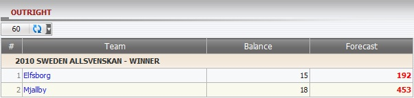

Outright
Definition:
Show master's winning amount based on postion taking displayed as Balance and the losing amount on each bet that master might lost displayed as Forecast if member wins that bet.

figure 1.1
- From the figure above, let's take league 2010 SWEDEN ALLSVENSKAN - WINNER as an example to understand this report.
- Total balance that master might win based on Position Taking for Elfsborg and Mjallby = 15 + 18 = 33.
- 1 Elfsborg: member stake = 50, odds = 15, master PT is 30%.
--> Balance = stake * master PT = 50 * 30% = 15
--> Forecast = total balance - stake * odds * master PT = 33 - 50 * 15 * 30% = -192
This means master will lose 192.
- 2 Mjallby: member stake = 60, odds = 27, master PT is 30%.
--> Balance = stake * master PT = 60 * 30%= 18
--> Forecast = total balance - stake * odds * master PT = 33 - 60 * 27 * 30% = -453
This means master will lose 453.